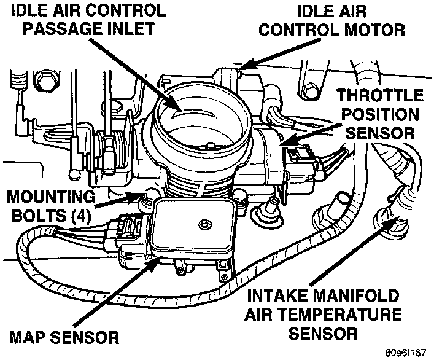

Component Test
THROTTLE POSITION SENSOR (TPS)Fig. 58 Sensors:

To perform a complete test of the Throttle Position Sensor (TPS) (Fig. 58) and its circuitry, refer to Powertrain Management/Computers and Control Systems/Testing and Inspection.
Testing and Inspection
To test the TPS only, refer to the following:
The TPS can be tested with a digital voltmeter. The center terminal of the TPS is the output terminal.
With the ignition key in the ON position, check the TPS output voltage at the center terminal wire of the connector. Check this at idle (throttle plate closed) and at Wide Open Throttle (WOT). At idle, TPS output voltage should be greater than 0.350 millivolts and less than 900 millivolts. At wide open throttle, TPS output voltage must be less than 4.5 volts. The output voltage should increase gradually as the throttle plate is slowly opened from idle to WOT.